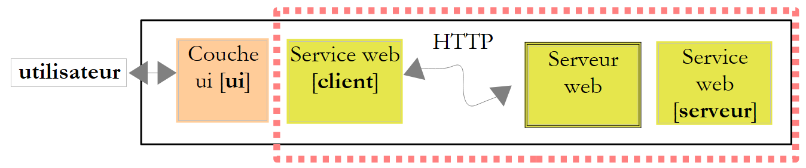
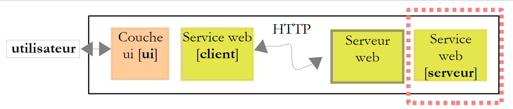
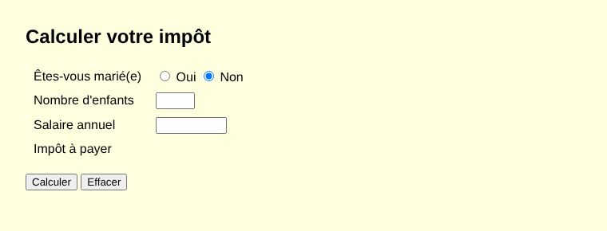
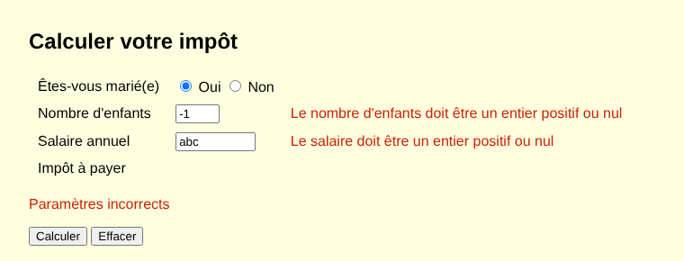

13. Web Services
Prerequisites: Version 9 of the [Impots] application, presented at the end of this chapter, reuses the [impots-dao], [impots-metier], and [impots-ui] modules from version 5 (Chapter 6). Before building or opening your projects, you must have installed version 5 in the local Maven repository using the command [mvn install] entered in the [06-architectures/ImpotsV5] folder (see Chapter 6, section on [mvn install]).
13.1. Introduction
In the previous chapter, we presented several TCP/IP client-server applications. Since the clients and the server exchange lines of text, they can be written in any language. The client simply needs to know the communication protocol expected by the server.
Web services are also server applications (TCP/IP). They have the following characteristics:
- they are hosted by web servers, and the client-server exchange protocol is HTTP (HyperText Transfer Protocol), a protocol built on top of TCP/IP, which we explored in the previous chapter;
- the web service has a standard communication protocol, regardless of the service provided. A web service offers various services: S1, S2…, Sn. Each of these services expects parameters provided by the client and returns a result to the client. For each service, the client needs to know:
- how to specify the service Si;
- the list of parameters to be provided and their types;
- the type of result returned by the service. Once these elements are known, the client-server dialogue follows the same format, regardless of which web service is being queried. Client code is thus standardized;
- To protect themselves from attacks originating on the Internet, many organizations open only certain ports on their servers to the outside world: primarily ports 80 (HTTP) and 443 (HTTPS) for the web service. All other ports are locked. Consequently, client-server applications such as those described in the previous chapter are generally restricted to the organization’s private network (intranet). Hosting a service on a web server makes it accessible to the entire Internet community;
- the web service can be viewed as a remote object: the services it offers then become methods of that object. A client can use this remote object as if it were local, through an intermediary object called a proxy, which hides all network communication. This allows us to build a client that is independent of this layer: if the layer changes, the rest of the client does not need to be modified;
- As with the TCP/IP client-server applications from the previous chapter, the client and server can be written in any programming language. They exchange lines of text consisting of two parts: the headers required by the HTTP protocol and the message body, whose format is agreed upon between the client and the server.
The architecture of a web service-based client-server application is as follows:

This is an extension of the layered architecture from Chapter 6, to which specialized network communication layers are added: the client-side web service client and the web service itself on the server side. We have already encountered a similar architecture with the TCP tax calculation server (version 8) from the previous chapter.
13.1.1. Yesterday: SOAP and WSDL
In the 2000s, web services most often followed the SOAP standard (Simple Object Access Protocol). The client sent a HTTP request to POST, whose body was a XML document: an “envelope” containing the name of the called method and its parameters. The server responded with another envelope, XML, containing the result. Each service was described by a XML document in WSDL format (Web Services Description Language), available at the service’s URL followed by [?wsdl]: it listed the methods, their parameters, and their types. Based on this document, tools automatically generated the service proxy.
In Java, these services were written using the API JAX-WS: a class annotated with [@WebService], whose public methods (which might be annotated with [@WebMethod]) became the service’s methods; the [wsimport] tool generated the client proxy from the WSDL. JAX-WS was part of the JDK from Java 6 through Java 10; it was removed in Java 11 (JEP 320) and now exists outside of JDK, under the name Jakarta XML Web Services. It is still found in legacy applications, but new services rarely use it anymore. The reasons for this phase-out include the cumbersomeness of XML and SOAP envelopes, the complexity of the associated standards (WS-Security, WS-Addressing, etc.), and the difficulty of calling these services from a browser.
13.1.2. Today: REST and JSON
Most current web services follow the REST style (REpresentational State Transfer) and exchange JSON documents (JavaScript Object Notation, presented in Chapter 5). The REST style is based on the following principles:
- the service exposes resources, each designated by a URL: [/impot], [/clients/12], [/clients/12/commandes];
- these resources are accessed using the methods (also known as verbs) of the HTTP protocol, each of which has a specific meaning;
- the result of the action is indicated by the HTTP status code in the response;
- the body of requests and responses is most often a JSON document, which is more compact and simpler than XML;
- The service is stateless: each request contains all the information necessary for its processing; the server does not store any information from one request to the next for a given client.
The most commonly used HTTP methods are as follows:
Method | Usage | Example |
GET | Read a resource; any parameters are in the URL | GET /clients/12 |
POST | Create a resource or request processing; the data is in the request body | POST /clients |
PUT | Replace a resource | PUT /clients/12 |
PATCH | Modify part of a resource | PATCH /clients/12 |
DELETE | Delete a resource | DELETE /clients/12 |
The status codes, which were introduced in the previous chapter, take on their full meaning here:
Code | Meaning |
200 OK | The request was successful; the response body contains the result |
201 Created | The resource was created; the [Location] header provides its URL |
204 No Content | The request was successful; the response has no body |
400 Bad Request | The request is invalid (missing or invalid parameter, etc.) |
404 Not Found | The requested resource does not exist |
415 Unsupported Media Type | The type of the document sent (header [Content-Type]) is not accepted |
500 Internal Server Error | An unexpected error occurred on the server |
A REST service does not have a required equivalent in WSDL. However, it is common practice to describe it using a OpenAPI document (formerly Swagger), in the JSON or YAML format, from which tools can generate documentation, test pages, and clients. We’ll come back to this later.
Finally, note gRPC, designed by Google: the service’s methods and their messages are described in a [.proto] file, from which tools generate the server and client, just as they did in the days of WSDL; the messages are encoded in a compact binary format (Protocol Buffers) and transmitted via HTTP/2. gRPC is very efficient and popular for communication between services within the same organization, but it is ill-suited for browsers. It is available in Java with the [grpc-java] library, which we will not be using.
13.1.3. Spring Boot and Spring MVC
To write our web services, we’ll use Spring Boot. In Chapter 6, we used the Spring Framework’s dependency injection container. This framework also includes a web module, Spring MVC, which maps a URL and a HTTP method to a Java method using annotations: [@RestController] on the class, [@GetMapping], [@PostMapping]… on its methods. Spring Boot (version 1.0 in 2014, version 4 in November 2025, with Spring Framework 7) simplifies the implementation of Spring:
- it automatically configures the application based on the available libraries: if Spring MVC and Jackson are present, it sets up everything needed for a web service JSON, without a single line of configuration;
- it embeds the web server within the application: the Tomcat server (version 11) is simply a library, launched by the main program. Therefore, there is no need to install a separate web server or application server (Tomcat, GlassFish, WildFly…), on which the application used to be deployed as a [.war] archive;
- it provides starters—Maven dependencies that bundle everything needed for a specific use case. The [spring-boot-starter-webmvc] starter includes Spring MVC, Tomcat, Jackson 3 (Chapter 5), and logging (SLF4J and Logback);
- it provides a Maven parent project, [spring-boot-starter-parent], which specifies the versions of all these libraries—which are compatible with one another—and a Maven plugin, [spring-boot-maven-plugin], which launches the application ([mvn spring-boot:run]) and packages it as a single executable file, [.jar].
Spring Boot is not the only solution: Jakarta EE (formerly Java EE) defines the API standard JAX-RS (Jakarta RESTful Web Services), and frameworks such as Quarkus, Micronaut, and Helidon are also widely used. Spring Boot is, however, the most widespread, and it naturally builds on what we covered in Chapter 6.
13.2. A First Web Service
We’re going to build our first client-server application with the following simplified architecture:

The projects in this chapter are Maven projects, grouped in the [13-services-web] folder:
The projects are already set up in the course materials: the reader simply needs to open the [13-services-web] folder within their IDE (IntelliJ, IDEA, or VS Code), or navigate to a project folder and enter the specified Maven command. Services are launched using [mvn spring-boot:run], and console clients using [mvn compile exec:java]. The [pom.xml] file located at the root of the folder is not a parent project: it simply lists the six projects within a [<modules>] tag, which allows you to build them all at once (by typing [mvn compile] in the [13-services-web] folder).
To create a Spring Boot project yourself, the easiest way is to use the Spring Initializr website: There, you select Maven, Java, the Spring Boot version, the project name, and its dependencies (in this case, “Spring Web”), and then download a ZIP file containing a ready-to-use project: the [pom.xml] file, the main class, and the [application.properties] file. IntelliJ, IDEA, and VS Code (with the “Spring Boot Extension Pack” extension) offer the same wizard.
13.2.1. The server-side

The file [pom.xml] from the project [WsHello] is as follows:
Comments:
- Lines 9–14: The project inherits from the Spring Boot parent project, [spring-boot-starter-parent], downloaded as a dependency from Maven Central (the empty tag [<relativePath/>] indicates that it should not be searched for in the parent folder). This parent project specifies the versions of several hundred libraries and configures the Maven plugins. This is why the dependencies and plugin on lines 28–31 and 48–51 do not have the [<version>] tag: their version is the one chosen by Spring Boot 4.1.1;
- line 21: the [java.version] property is the one used by the parent project to configure the compiler; line 22 duplicates it, in line with the other projects in the course;
- Lines 28–31: The project’s sole dependency is the web starter. It provides Spring MVC (Spring Framework 7.0), the embedded Tomcat 11 server, Jackson 3, and logging;
- line 41: the compiler option [-parameters], which preserves the names of method parameters in the [.class] files. Spring needs this to map a method parameter ([nom]) to the parameter of the same name in a URL. The parent project already enables this option; we include it here to make it visible;
- lines 48–51: the Spring Boot plugin. [mvn spring-boot:run] compiles and runs the application; [mvn package] creates a [target/ws-hello-1.0.jar] file containing the application and all its dependencies, which is then run by [java -jar target/ws-hello-1.0.jar].
The main class is as follows:
- Line 7: The annotation [@SpringBootApplication] combines three annotations: [@Configuration] (the class can define beans, as in Chapter 6), [@EnableAutoConfiguration] (automatic configuration based on the available libraries), and [@ComponentScan] (Spring searches for annotated classes—controllers, configurations, etc.—in this class’s package and its subpackages);
- line 10: Here we retain the standard form of the [main] and [public static] methods, under which Spring Boot tools search for the main class;
- line 12: [SpringApplication.run] reads the configuration ([application.properties] file, environment variables, command-line arguments), creates the Spring container and its beans, starts the Tomcat server, and then returns control. However, the program does not stop there: the Tomcat threads wait for requests until the application is terminated (Ctrl-C).
The application configuration is stored in the file [src/main/resources/application.properties]:
- line 2: the application name;
- line 4: the server listens on port 5100 (8080 by default). This value can also be passed as an argument: [mvn spring-boot:run -Dspring-boot.run.arguments=--server.port=5100], or via the environment variable [SERVER_PORT];
- line 6: By default, Spring Boot displays a large banner with the text ASCII on startup; we remove it;
- line 8: the format of log messages. The default format is very comprehensive (date, level, process ID, application name, thread, full class name, message) but results in very long lines. We’re reducing it to the time, the message level, the thread name, the short name of the issuing class ([%logger{0}]), and the message.
The web service itself is the class [HelloController]. It provides a method that returns the string [Bonjour Mme xx], where xx is the received name:
Comments:
- Line 8: The annotation [@RestController] designates the class as a controller: Spring creates a single instance (a singleton) of it at startup and assigns it the requests HTTP, where URL corresponds to one of its methods. The result of each method is sent as-is to the client, in the response body;
- lines 12–15: The [@GetMapping("/")] annotation associates the HTTP and GET methods with the URL and [/] (the site root) with the method [accueil], which returns text explaining how to use the service;
- Lines 20–23: The template URL (known as the route) [/hello/{nom}] contains a variable [{nom}]: it corresponds to any segment of URL that comes after [/hello/]. Thus, URL [/hello/Carla%20Bruni] assigns the value [Carla Bruni] to [{nom}] (the code [%20] represents a space in URL). The annotation [@PathVariable] (line 21) instructs Spring to pass this value to the method parameter of the same name: this is data binding. The method returns a string: this is sent as-is to the client as a text document (type [text/plain]);
- lines 26–29: the same process, but the method returns an object of type [Salutation]. Spring serializes it to JSON using Jackson (Chapter 5) and sends it to the client as a document of type [application/json]. This is the standard format for a REST web service response;
- lines 32–33: the result type, a record (Chapter 4), declared within the controller. Jackson knows how to serialize records: each component becomes a JSON property with the same name.
The service is launched by the command [mvn spring-boot:run], entered in the project folder. It displays its log (the course has abbreviated the paths in line 2 to [...]):
- line 2: the application startup, the Java version, and the execution directory, which is the project directory;
- line 3: Spring allows you to define profiles (development, test, production, etc.) that enable different configurations ([application-dev.properties] files, etc.). No profile is active here;
- lines 4–6: the embedded Tomcat server is created; it will listen on port 5100;
- line 7: The Spring container is ready: it has created its beans, including our controller;
- lines 8–9: Tomcat is now accepting connections; the application is ready. Startup took about ten seconds on our test machine, which is rather slow; it usually takes two or three seconds;
- lines 10–12: These messages appeared during the first request: the Spring servlet [DispatcherServlet], which receives all requests and distributes them among the controller methods, is initialized only at this point. A servlet is a Java component that processes requests in a web server such as Tomcat (Jakarta Servlet); Spring is built on top of this. The thread name, [http-nio-5100-exec-1], indicates that the request is being processed by one of the Tomcat server’s threads;
- lines 13–14: these messages appeared when the server was shut down using Ctrl-C, after the tests described in the following paragraphs; the shutdown was “graceful”—Tomcat completes any pending requests before shutting down.
Each log message indicates its time, its level ([TRACE], [DEBUG], [INFO], [WARN], [ERROR]), the thread that sent it, and the sender class. Messages at level [INFO] and above are displayed by default; the [logging.level.<paquetage>=DEBUG] property also displays lower-level messages for a given package.
13.2.2. Querying the service with curl
While the service is running, let’s query it in a second command window using the [curl] tool introduced in the previous chapter. The [-i] option displays the response headers before the body, and the [-s] (silent) option suppresses the progress bar:
- Line 2: The request was successful. Tomcat does not send the text that usually follows the status code ([OK]): it has been optional since HTTP/1.1 (and no longer exists in HTTP/2); only the code matters;
- Line 3: The document is text (UTF-8);
- line 4: the document size, in bytes;
- line 5: the response time, always expressed in Coordinated Universal Time (GMT) in the HTTP headers, whereas the server log uses local time;
- line 7: the result of the [hello] method.
Now let’s request the JSON version:
- line 3: the document is now of type [application/json]. It is not necessary to specify the character set: a JSON document exchanged over the network is always encoded in UTF-8 (RFC 8259);
- Line 7: The serialized object [Salutation]. The properties JSON, [nom], and [message] correspond to the names of the record's components. Since the Java names are already in the format “camelCase,” and the usage is in JavaScript and JSON, there is nothing to convert.
A URL that does not match any route returns a 404 response:
- Line 4: The document is sent in chunks, each preceded by its size; the server did not have to calculate the total size of the document before starting to send it;
- line 7: the error document generated by Spring Boot: the date, the status code, its text, and the requested path. For security reasons, it contains neither the message of any exception nor the call stack (properties [server.error.include-message] and [server.error.include-stacktrace], disabled by default). We’ll see in the next service how to obtain a standardized error document.
You can also type URL [http://localhost:5100/hello/Carla Bruni] into a browser’s address bar, which will display the received text: a web service queried by GET can be tested very easily.
13.2.3. A console client

It is possible to write the service client using a simple TCP client, as in the previous chapter: simply send the request HTTP and read the response. However, we use the [java.net.http.HttpClient] class (Java 11)—also introduced in the previous chapter—which handles the HTTP protocol for us and uses Jackson for the JSON documents. The [ClientWsHello] project is a standard Maven project, whose [pom.xml] file declares the Jackson dependency and the main class:
Its code is as follows:
Comments:
- Lines 16–18: The service’s response, JSON, will be deserialized into a [Salutation] object. The client does not have access to the server’s [Salutation] type; it declares its own, with the same component names. A client does not share the server’s code, only the format of the exchanged documents;
- line 22: the service’s URL is passed as an argument or, failing that, defaults to [http://localhost:5100/]: if the service’s address changes, the client does not need to be recompiled;
- line 24: the JSON converter from Jackson 3 (Chapter 5);
- line 27: a single [HttpClient] for the entire program. It manages a set of reusable connections and must be shared, not recreated for each request. Starting with Java 21, [HttpClient] implements [AutoCloseable]: the [try] statement with a resource closes it at the end of the program;
- line 37: the entered name becomes a segment of URL: characters not allowed there must be encoded. [URLEncoder.encode] encodes the “é” as [%C3%A9], but it is intended for form parameters, where the space is encoded as [+]. In a URL path, the space must be encoded as [%20]: so we replace the [+] (a valid [+] entry is encoded as [%2B] and is not affected);
- line 39: The method [resolve] of the class [URI] constructs a URL from the base URL and a relative URL. Note: The base URL must end with [/] for [hello/...] to be added to it;
- lines 42–43: The JSON response is deserialized into a [Salutation] object using Jackson’s [readValue] method;
- lines 45–47: The exception [ConnectException] is thrown when a connection to the service is impossible, for example, when no service is listening at the specified address. It has no message; we construct one. This [catch] must precede the one on line 48, because [ConnectException] is derived from [IOException];
- lines 48–50: other communication errors and error responses from the service (see line 62);
- lines 57–65: a GET request, whose response body is rendered as a string;
- line 58: the request is built using a builder: URL, the HTTP method, then [build];
- Line 59: The [send] method sends the request and waits for the response. Its second parameter, a [BodyHandler], specifies what to do with the response body: [ofString] reads the entire body into a string, decoded according to the character set specified by the [Content-Type] header (UTF-8 by default). [send] triggers a [IOException] in the event of a communication error and a [InterruptedException] if the thread is interrupted while waiting; the main program allows the latter to propagate upward (line 20);
- lines 61–63: Unlike other libraries, [HttpClient] does not treat an error status code (4xx, 5xx) as an exception: the response is returned normally, and it is up to us to examine its code. Here, we launch a [IOException] for any code other than 2xx.
Results, with the service running:
Line 4 displays the received [Salutation] object, in the format of the [toString] method generated for the records. The Maven option [-q] (quiet) suppresses its own messages. If you specify an address where no service is listening, the connection is refused:
And if the service’s URL is incorrect, the service returns a 404:
With a service SOAP, the client used a proxy generated from the service’s WSDL and called the remote method as if it were a local method. Here, we are calling the service’s URL directly. We will write a proper proxy for the tax calculation service.
13.2.4. Service description: OpenAPI
The WSDL described a SOAP service in a standardized format. Its current equivalent is the OpenAPI document. For Spring Boot, the [springdoc-openapi] library ([org.springdoc:springdoc-openapi-starter-webmvc-ui] dependency) generates it without a single line of code: it scans the controllers and their annotations at startup and publishes the document to URL and [/v3/api-docs], as well as an interactive test page, Swagger UI, to URL and [/swagger-ui.html]. The document describes each route: its URL, its method HTTP, its parameters and their types, and the schema JSON of its responses. Generators such as the OpenAPI Generator use this to generate a typed client in various languages, just as [wsimport] did with WSDL. This library is not part of Spring Boot, and we will not use it in this chapter.
13.3. A Web Service for Arithmetic Operations
The previous service offered a single method. We will now consider a web service that provides the four arithmetic operations: add(a, b), subtract(a, b), multiply(a, b), and divide(a, b). We’ll take this opportunity to explore the two ways to pass parameters to a web service and how to handle errors.
13.3.1. The Server Side
The [WsOperations] service accepts two types of requests:
Request | Parameters |
GET /add?a=1.5&b=2 | The operation in the URL path, the numbers in its query string |
POST /calculate | a document JSON in the request body: [{"operation":"ajouter","a":1.5,"b":2}] |
In both cases, the response is a document JSON: [{"operation":"ajouter","a":1.5,"b":2.0,"resultat":3.5}]. GET is suitable for simple requests that do not modify anything on the server: URL can be typed into a browser, bookmarked, and its response can be cached. POST is suitable for large or structured data. The project’s [pom.xml] file is the same as [WsHello], except for the project name ([ws-operations]), and its main class, [WsOperationsApplication], is identical to that of [WsHello]. Its [application.properties] file is as follows:
- line 4: the service is listening on port 5110;
- line 6: errors detected by Spring MVC itself (unknown URL, invalid JSON document, unsupported document type, etc.) will be reported via a response in the Problem Details format. This format, standardized by RFC 9457, is a JSON document of type [application/problem+json] that describes an error: its type, a title, the status code, a detail, and any additional information. This is the standard way for a REST service to indicate what is wrong.
The validator is as follows:
Comments:
- Lines 24–28: The GET request. The method’s [operation] parameter is linked to the route variable [{operation}] ([@PathVariable]). The parameters [a] and [b], annotated as [@RequestParam], are bound to the parameters of the same name in the query string ([?a=1.5&b=2]). They are optional ([required = false]): a missing parameter is treated as [null]; otherwise, Spring would reject a request missing any of them with a 400 response;
- Line 26: [a] and [b] are declared as type [String]. We could have declared them as type [double] or [Double]: Spring would then have performed the conversion itself and rejected an incorrect value with a 400 response containing a generic error message. By receiving them as strings, we retain control over the error messages;
- lines 32–35: the request POST. The parameter [demande], annotated as [@RequestBody], is constructed by Jackson from the request body JSON. Its components are of type [Double] (line 93), not [double]: a property missing from the JSON document is then evaluated as [null], which allows it to be detected;
- lines 38–49: converting a string to a number; if this fails, the result is [null]. In both URL and JSON, numbers are written with a decimal point: [Double.parseDouble], which is independent of the system language, is therefore the correct tool (and not [NumberFormat], which would expect a comma on a French server, Chapter 5). It also accepts the texts [NaN] and [Infinity], which we reject (line 45);
- line 54: the operation name, in lowercase. [Locale.ROOT] performs the conversion regardless of the system language;
- lines 55–61: the requested operation is represented by a functional interface (Chapter 7), [DoubleBinaryOperator], whose method [applyAsDouble(double, double)] returns a [double]. A [switch] expression selects the lambda corresponding to the operation; for an unknown operation, it selects [null];
- lines 63–73: the three parameters are validated by accumulating errors in a dictionary that associates each parameter with its list of error messages. A [LinkedHashMap] preserves the order of insertion;
- lines 74–80: If an error is found, a 400 response is returned. The Spring class [ProblemDetail] represents a “Problem Details” document: [forStatus] creates it with a status code, [setTitle] sets its title, and [setProperty] adds a property to it—in this case, [errors], the list of errors. The class [ResponseEntity] represents a complete HTTP response: status code, headers, and body. [ResponseEntity.badRequest()] prepares a 400 response, and [body] provides its body;
- lines 82–87: division by zero is rejected with a 400 response, whose document this time includes a detail ([forStatusAndDetail]). This rejection is necessary: in Java, dividing a [double] by zero does not throw an exception but returns infinity ([Double.POSITIVE_INFINITY]), which a JSON document cannot represent (Jackson would write it as a string, ["Infinity"]). The [b == 0] test compares the value of the [Double] object to zero: Java automatically “unboxes” it;
- line 89: the 200 response, whose body is the [ResultatCalcul] object serialized to JSON;
- lines 93–98: the two types exchanged with clients. These objects, which are used solely to transport data between two applications, are called DTO (Data Transfer Object). Records are ideal for this purpose.
Both methods of the controller return the type [ResponseEntity<?>]: a response whose body can be of any type, in this case a [ResultatCalcul] or a [ProblemDetail]. Spring examines the actual type of the body to serialize it; it assigns the document the type [application/json], or [application/problem+json] for a [ProblemDetail].
13.3.2. Tests with curl
The service is launched by [mvn spring-boot:run] in the [WsOperations] folder. An addition:
The number 2 has become 2.0: Jackson always writes a [double] with its decimal part. For a client—JavaScript in particular—it’s the same number. A division by zero:
- Line 2: The request is denied;
- line 3: the body is a “Problem Details” document;
- line 6: After a 400 response, Tomcat closes the connection as a precaution: an invalid request could have left unexpected data in the connection. The client will open another one for its next request;
- line 8: the document contains the properties [title], [status], and [detail], set by our code, and [instance], added by Spring: the path of the request that caused the error. The property [type]—a URL that documents the error type—is missing: the RFC 9457 then assigns it the value [about:blank], which means that the status code is sufficient to describe the problem. Note that the properties are sorted alphabetically: this is the default behavior of Jackson 3 for ordinary classes such as [ProblemDetail]; records, on the other hand, retain the order of their components.
An unknown operation, a number written with a decimal point, and a missing number:
The document’s [errors] property contains the validation errors, parameter by parameter; added by [setProperty], it is placed after the normalized properties. Now a POST query. The [-d] option of [curl] sends the text that follows it in the body of a POST request, and the [-H] option adds a header to the request, in this case the type of the document being sent:
If the sent JSON document is invalid, Jackson cannot construct the [demande] parameter: Spring responds with a 400 error on its own, without executing our method:
The “Problem Details” document on line 8 was generated by Spring MVC, thanks to the property [spring.mvc.problemdetails.enabled]; without it, we would get the Spring Boot error document seen with [WsHello]. The same applies if the [Content-Type] header is omitted: [curl] then sends the body as a HTML form, and Spring rejects this type of document:
Code 415 (Unsupported Media Type) means that the type of document sent is not accepted; the [Accept] header on line 3 tells the client which types are accepted.
13.3.3. The client side
Our console client requests the operation and the two numbers on a single line, then queries the service twice: first with GET, then with POST, to demonstrate both methods. Its [pom.xml] file is identical to [ClientWsHello], except for the project name and the main class. Its program is as follows:
1 2 3 4 5 6 7 8 9 10 11 12 13 14 15 16 17 18 19 20 21 22 23 24 25 26 27 28 29 30 31 32 33 34 35 36 37 38 39 40 41 42 43 44 45 46 47 48 49 50 51 52 53 54 55 56 57 58 59 60 61 62 63 64 65 66 67 68 69 70 71 72 73 74 75 76 77 78 79 80 81 82 83 84 85 86 87 88 89 90 91 92 93 94 95 96 97 98 99 100 101 102 103 104 105 106 107 108 109 110 111 112 113 114 115 116 117 118 119 120 121 122 123 124 | |
Comments:
- Lines 20–29: the client’s DTO files. They are declared here again: a client does not share the server’s code, only the format of the exchanged JSON documents. Spring’s [ProblemDetail] class is part of the web framework; a simple record is sufficient for the client. Its components are object types ([String], [Integer], [Map]): a property missing from the document, such as [detail] or [errors], is set to [null];
- line 32: numbers are entered and displayed in the system language format, in this case French: decimal point;
- Line 37: From Jackson 3, unknown properties in the record (here, [instance]) are ignored by default during deserialization;
- lines 51–63: The numbers are verified locally before any call to the service is made. A service must always verify its parameters (since it does not know who is calling it), but a client can avoid unnecessary network traffic;
- line 64: the text describing the calculation, with the numbers in French format;
- line 67: the URL for the GET request. Numbers must be written with a decimal point: concatenating a [Double] to a string uses its [toString] method, which is independent of the system language. The operation, entered by the user, is coded as [URLEncoder];
- lines 69–70: the request GET;
- lines 71–74: if successful (status code 200), the response JSON is deserialized into a [ResultatCalcul] object;
- lines 75–79: if the request fails, the status code and the received document are displayed as-is;
- lines 80–83: The exception [IOException] indicates a communication error, such as a service that cannot be reached;
- lines 87–92: the POST request. The [DemandeCalcul] object is serialized into JSON by [writeValueAsString]; the request receives the header [Content-Type], followed by its body: [BodyPublishers.ofString] sends a string, encoded as UTF-8;
- lines 97–107: in case of failure, the body is a “Problem Details” document, deserialized into a [Probleme] object, whose title, details, and validation errors are displayed. The [forEach] method of a [Map] receives a lambda with two parameters: the key and value of each element (Chapter 7);
- lines 118–123: reading a number in French format. The [parse(String, ParsePosition)] method of [NumberFormat] reads the beginning of the string and indicates in the [ParsePosition] object where it stopped: if it did not stop at the end, the input contains extra characters ([2,5x]).
Results, with the service running:
- line 3: the URL from the GET query: the number 1.5 entered there is written as 1.5;
- Lines 6–8: The same error observed in both requests: the raw document for request GET, and its processing for request POST;
- Lines 10–12: The service detected an unknown operation;
- line 14: the incorrect number was detected by the client, which did not query the service.
13.4. Sample Application—Version 9: A Web Service for Calculating Taxes
We’ll revisit the tax calculation application. In the previous chapter (version 8), we had created a server named TCP that could be queried remotely, using its own communication protocol. We’ll now turn it into a web service named REST.
13.4.1. The Architecture
The architecture of version 9 is as follows:

- on the server side, the [WsImpot] web service receives HTTP requests and has them processed by the [metier] and [dao] layers from Version 5 (Chapter 6), which are reused as-is;
- on the client side, the [ui] layer from version 5 is also reused as-is. It communicates with a new type of [metier] layer, [ImpotMetierHttp], which implements the [IImpotMetier] interface by querying the web service: it acts as a proxy for the service. The [ui] layer is unaware that the calculation is performed on another machine;
- on both sides, the integration of the layers is handled by Spring’s dependency injection container, just as in version 5.
13.4.2. The web service
The service contract is as follows:
Request | Response on success | Response in case of an error |
GET /tax?spouse=o&children=2&salary=60000 | 200: [{"impot":4282}] | 400: "Problem Details" document |
POST /impot with the body [{"marie":true,"enfants":2,"salaire":60000}] | 200: [{"impot":4282}] | 400: "Problem Details" document |
The [WsImpot] project depends on the [impots-dao] and [impots-metier] modules from version 5. For Maven to find them, you must first install them in the machine’s local Maven repository (the [.m2/repository] folder in the user’s home directory) by typing [mvn install] in the [06-architectures/ImpotsV5] folder (Chapter 6). The dependencies of the [pom.xml] file from [WsImpot] are then as follows (the rest of the file is the same as [WsHello], except for the project name: [exemples.impots:ws-impot:9.0]):
- Lines 7–17: the two modules from version 5, identified by their Maven coordinates. The [impots-dao] module also includes the [TrancheImpot] and [ImpotException] classes from the [entites] layer. These modules depend on Jackson 3.1.5, which the web starter already provides.
The [application.properties] configuration file is as follows:
- line 4: the service listens on port 5120;
- Lines 13–14: the configuration for the [dao] layer, in the same format as in the [impots.properties] file from version 5: the implementation to use and its data file. These are not Spring Boot properties, but properties specific to our application: a [application.properties] file can contain as many as desired. Here we are using the files JSON and [DataImpot.json], located in the project folder, which is the service’s runtime folder along with [mvn spring-boot:run].
The [dao] and [metier] layers are integrated into the Spring container via a configuration class:
Comments:
- line 15: the annotation [@Configuration] (Chapter 6): the class defines beans. Spring finds it because it is located in the same package as the main class ([@ComponentScan]);
- Lines 19–29: The annotated method [@Bean] creates the layer [dao]. Its parameters are provided by Spring: the annotation [@Value] injects the value of a configuration property into it. In [${dao.implementation:HardwiredImpot}], the text following the character [:] is the default value, used if the property is missing. This method and the next one are the same as those in the [ImpotsConfig] class from Version 5 (Chapter 6), without the [@PropertySource] annotation: Spring Boot reads the [application.properties] file itself;
- lines 32–35: the [metier] layer. The [dao] parameter of the method receives the bean of type [IImpotDao]: Spring therefore creates the [dao] layer before the [metier] layer.
These lines replace the layer integration that the main program performed in version 5: the Spring container is the same, but it is now Spring Boot that creates it and locates the configuration class on its own. The beans defined this way are singletons, created when the application starts up, before any requests are processed: if the data file is missing or incorrect, the service does not start, rather than responding to all requests with a 500 error. We’ll verify this later.
The web service is the [ImpotController] controller:
Comments:
- Line 24: the class log. Spring Boot uses the API logging framework (Simple Logging Facade for Java), which is implemented here using Logback. [LoggerFactory.getLogger] generates a log entry whose category is the full name of the class;
- Lines 27–31: The controller receives the [metier] layer from its constructor. Spring, which creates the controller, passes it the bean of type [IImpotMetier] defined by [ImpotConfig]: this is constructor injection as described in Chapter 6. A field named [final] ensures that the layer will not change;
- lines 34–43: the GET request. The three parameters of the query string are received as strings and converted: [o]/[n] to [marie] (lines 37–41, an expression [switch] whose type is [Boolean]), integers for [enfants] and [salaire] ([lireEntier], lines 76–82), [null] in case of an error;
- lines 46–49: the query POST: the body JSON is deserialized into an object [DemandeImpot] (line 94), whose object-type components ([Boolean], [Integer]) are used to detect missing values. The same URL [/impot] is associated with two methods, depending on the HTTP method of the query;
- lines 52–73: the processing common to both requests. It returns a response if successful and throws an exception if an error occurs. The type of its result, like that of the methods on lines 35 and 47, is therefore simply [ReponseImpot]: reading their signatures shows what the service returns when everything goes well;
- line 54: Are the three parameters correct? The comparisons [enfants >= 0] and [salaire >= 0] unpack the [Integer] objects: they are evaluated only if these are not [null], thanks to the lazy evaluation of the [&&] operator;
- line 55: the calculation is delegated to the [metier] layer of version 5;
- line 56: each calculation is logged at the [INFO] level. The message text is a template: each instance of [{}] is replaced by the corresponding argument, in order. Unlike concatenation, the message is constructed only if it needs to be displayed (depending on the log level), and logging tools can record each value separately;
- lines 60–72: In the event of an error, the error list is constructed, a warning ([warn]) is logged, and a [DemandeIncorrecteException] exception is thrown that carries this list;
- lines 85–91: An annotated method [@ExceptionHandler] acts as an exception handler: Spring calls it when a controller method throws an exception of the type specified by its parameter, in this case [DemandeIncorrecteException]. What it returns becomes the HTTP response: a [ProblemDetail], whose status code (400) becomes the response’s status code;
- lines 94–99: the service’s DTO responses.
The [DemandeIncorrecteException] exception is as follows:
- line 8: an unchecked exception, which does not need to be declared by the methods that throw it;
- lines 10–11: an exception is serializable (in the sense of Java binary serialization): the compiler requires, with the [-Xlint:all] option, that it declare a version number;
- line 15: the list of errors. The keyword [transient] excludes this field from binary serialization, since the type [Map] is not necessarily serializable; without it, the compiler would issue a warning. This has no consequence here: our exceptions are never serialized.
The main class [WsImpotApplication] is identical to that of the other two services. The [src/main/resources/static] folder contains the web client, which is discussed in the following section.
The web service is stateless: the controller's methods do not retain any state from one request to the next. The controller and the layers [metier] and [dao] are singletons, created once and for all, that exist for as long as the application runs; they are shared by all requests, which may be processed simultaneously by different threads of the Tomcat server (Chapter 8). This isn’t a problem here because these objects are never modified after they are created: the tax brackets are read once and for all, and the controller has only one [final] field. A controller should never store request-specific data in its fields. The singleton is the default scope for Spring beans; but there are others: [prototype] (one object per request to the container), [request] (one object per request HTTP), [session] (one object per session HTTP). Finally, note that the [spring.threads.virtual.enabled=true] property causes each request to be processed by a virtual thread (Java 21, Chapter 8) instead of a thread from the Tomcat pool: the service can then handle a very large number of concurrent requests that are waiting for I/O operations.
13.4.3. Running the Service
Let’s start with a configuration error. Command-line arguments in the form [--propriété=valeur] are part of the application configuration and override the values of [application.properties]. With [mvn spring-boot:run], these are passed via the [spring-boot.run.arguments] property. Let’s specify a nonexistent data file (the course has abbreviated the lines in this log—which are very long—to [...]):
- line 4: the Tomcat server was created, but it hasn’t opened its port yet;
- line 6: bean creation failed. To create the controller, Spring had to create the [metier] layer, and therefore the [dao] layer, whose constructor instantiated a [ImpotException] (Chapter 6). The messages for our layers are in French; those for Spring are in English;
- line 7: the Tomcat server is stopped; the service did not accept any requests;
- lines 9–21: the startup failure report. Its description (line 17) and the recommended action (line 21) are generated by a class we wrote for this purpose.
In fact, when startup fails, Spring Boot normally displays the exception and the entire call stack: dozens of lines, where the relevant message is hard to find. Spring Boot can also pass the exception to failure analyzers, which translate it into a readable report. It provides analyzers for the most common errors (port already in use, bean not found, etc.), and we can add our own:
- Line 9: Spring Boot’s [AbstractFailureAnalyzer<T>] class searches for an exception of type [T]—in this case, [ImpotException]—in the chain of causes leading to the exception that caused the startup to fail. If it finds one, it calls the [analyze] method;
- line 12: the parameter [rootFailure] is the initial exception, and [cause] is the [ImpotException] found in the chain;
- lines 14–18: The report is a [FailureAnalysis] object consisting of a description, a recommended action, and the analyzed exception.
This analyzer is not a bean (it must function even if the container could not be created): Spring Boot searches for it in the [META-INF/spring.factories] files of the libraries and the application. Ours is located in [src/main/resources/META-INF]:
- line 2: the key is the name of the [FailureAnalyzer] interface, and the value is the name of our class (multiple classes would be separated by commas).
Now let’s start the service as usual, using [mvn spring-boot:run], and then query it with [curl]:
This is the expected test result: a married taxpayer with two children and an annual salary of 60,000 euros pays 4,282 euros in taxes (note that the tax schedule used—the 2004 schedule—is retained only for this fiscal year). With incorrect parameters:
Then in POST, with a document JSON:
The service log will be shown at the end of the chapter: it contains a record of all the requested calculations.
13.4.4. The console output: a new layer [metier]
The Version 9 client uses the [ui] layer from Version 5 without modifying it: the [impots.ui.Dialogue] class, whose static method [run(IImpotMetier metier)] interacts with the user and requests calculations from the [metier] layer that is passed to it. Simply pass it a layer named [metier] that queries the web service. The dependencies of the [ClientWsImpot] project are as follows (the rest of the [pom.xml] file is the same as that of [ClientWsHello], except for the project name and the main class: [exemples.impots:client-ws-impot:9.0], [impots.client.Main]):
- Lines 4–13: Version 5 modules: [impots-metier] for the [IImpotMetier] interface, [impots-ui] for the [Dialogue] class. A project may depend on a module that contains a main program: in this case, it uses the module’s public classes without executing the program itself. The module [impots-dao] is an indirect (or transitive) dependency: the client uses only the class [ImpotException] from it. Similarly, [impots-ui] provides the Spring container ([spring-context]);
- lines 15–19: Jackson, for the JSON documents. It is also provided by [impots-dao], but the client uses it directly: it is preferable to declare it.
The new layer [metier] is the class [ImpotMetierHttp]:
Comments:
- line 14: the class implements the [IImpotMetier] interface from version 5;
- lines 17–21: the DTO variables are declared inside the class ([private]) because no one else uses them;
- lines 28–31: the class receives, via its constructor, the client
HTTPand the service’sURL, from which it calculates theURLfor the*[POST /impot]* method; - lines 36–40: the request [POST impot], with the request serialized as JSON in its body;
- line 44: the request is sent synchronously: the [send] method waits for the response, which is consistent with the [calculerImpot] method of the interface, which is itself synchronous (it returns a [int]);
- Lines 45–47: [send] triggers a [IOException] if the service is unreachable. This is a caught exception, which the [calculerImpot] method of the interface does not declare: it is encapsulated within a [ImpotException], the uncaught exception of the [Impots] application;
- lines 48–52: the same applies to [InterruptedException], which is thrown if the thread is interrupted while waiting. Catching the exception clears the thread’s interruption flag: best practice (Chapter 8) is to reset it using [Thread.currentThread().interrupt()] so that the calling code knows the thread was interrupted;
- lines 54–57: An error response is converted to [ImpotException], whose code is the status code HTTP;
- line 59: the response JSON [{"impot":4282}] is deserialized, and the tax amount is returned.
With a SOAP service, the [wsimport] tool used to generate a proxy, and a class similar to this one implemented [IImpotMetier] by delegating the calculation to it: today, we write the few dozen lines of the proxy ourselves.
Since the [calculerImpot] method of the [IImpotMetier] interface is synchronous, we used the synchronous [send] method of [HttpClient]. This interface also offers an asynchronous method, [sendAsync], which immediately returns a [CompletableFuture<HttpResponse<T>>] (Chapter 9). To take advantage of this, we would need to make the interface asynchronous: [CompletableFuture<Integer> calculerImpotAsync(boolean marie, int nbEnfants, int salaire)], which would require modifying the [IImpotMetier] interface, its implementations, and the [ui] layer. We did not do this in order to keep the layers from version 5 intact. With virtual threads (Java 21), synchronous code has once again become the recommended way to write programs that involve a lot of I/O: a virtual thread blocked by [send] does not block any system threads.
The client’s main program integrates the layers:
Comments:
- line 13: the service’s URL, passed as an argument or, by default, [http://localhost:5120/];
- line 18: the Spring container, as in version 5. It is closed at the end of the [try] block;
- Lines 20–22: three beans are registered: the service bean URL and the client bean HTTP, provided by lambdas (of type [Supplier]), followed by the class [ImpotMetierHttp]. To create this class, Spring examines its constructor and passes it the beans of types [HttpClient] and [URI];
- line 23: the container creates the beans;
- line 24: the container is asked for a bean of type [IImpotMetier]; it returns the object [ImpotMetierHttp], which implements this interface. The rest of the program is unaware of the implementation;
- line 28: the dialog from version 5, without any modifications;
- lines 29–33: if the service cannot be reached, the exception is propagated from the [metier] layer through the [ui] layer, which does not handle it: it is displayed using the [Dialogue.afficherErreur] method from version 5;
- lines 35–37: in the event of an error, the program terminates with code 1 after closing the container.
Results, with the service running:
The tax calculation check values are displayed: 4,282, 2,959, and 11,519 euros. The incorrect entry on line 8 was detected by layer [ui], which did not call layer [metier]: the service received only valid requests. If the service is stopped:
Our proxy’s [ImpotException] encapsulates the [ConnectException] exception thrown by [send], which itself encapsulates the network layer exceptions (Chapter 12). None of them have a message: [getMessage()] returns [null].
13.5. A web client for the tax calculation service
A “traditional” web application generates its pages (HTML) on the server: each time a button is clicked, the form is sent to the server, which returns a new, complete page to the browser. Today, the browser most often queries a web service itself, in JavaScript, and updates only the part of the page that has changed. That’s what we’re going to do. The architecture is as follows:

- 1: The browser requests the page [/]; the server [WsImpot] sends it the static file [index.html];
- 2: Each time the [Calculer] button is clicked, the JavaScript code on the page sends the [POST /impot] request to the web service and displays the received tax amount on the page without reloading it.
The web service has not been modified: it simply serves one additional file. Spring Boot automatically serves files placed in the [static] folder within the application’s resources ([src/main/resources/static]) as static files: HTML pages, images, scripts, style sheets, etc. The [static/index.html] file is also served for URL and [/]: this is the welcome page. A single server can thus host both a website and a web service. The [index.html] page is as follows:
1 2 3 4 5 6 7 8 9 10 11 12 13 14 15 16 17 18 19 20 21 22 23 24 25 26 27 28 29 30 31 32 33 34 35 36 37 38 39 40 41 42 43 44 45 46 47 48 49 50 51 52 53 54 55 56 57 58 59 60 61 62 63 64 65 66 67 68 69 70 71 72 73 74 75 76 77 78 79 80 81 82 83 84 85 86 87 88 89 90 91 92 93 94 95 96 97 98 99 100 101 102 103 104 105 106 107 108 109 110 | |
Comments:
- Lines 15–44: the form: two radio buttons for marital status, two input fields for the number of children and salary—each followed by a cell where an error message (if any) will be displayed—one field for taxes, a paragraph for a general message, and two buttons;
- lines 46–108: the page’s code, JavaScript, executed by the browser. The course does not cover JavaScript; however, this code is close enough to Java to be read without difficulty;
- line 57: an input that is not an integer results in [null]; it is up to the service to report the error;
- line 70: the click handler for the [Calculer] button (submit form). This is an asynchronous function ([async]): like [CompletableFuture] (Chapter 9), it does not block the browser while waiting for a response;
- line 71: we prevent the browser from submitting the form on its own, which would cause a new page to load;
- lines 74–77: the request, a JavaScript object that has the format expected by [POST /impot];
- lines 80–83: The browser’s [fetch] function sends the HTTP request: the method [POST], the header [Content-Type], and the body—the request serialized into JSON by [JSON.stringify]. The URL and [impot] are related to the page: the request is sent to the server that provided the page. [await] waits for the response without blocking the browser;
- line 85: the body of the response is deserialized into an object;
- lines 86–88: if successful (2xx code), the tax amount is displayed;
- lines 91–94: if an error occurs, the document title “Problem Details” is displayed, along with error messages regarding the number of children and the salary, each next to its corresponding input field. The operator [?.] returns [undefined] if the object to its left does not exist, rather than causing an error; the operator [??] replaces a missing value with the value that follows it. Java has no direct equivalent for these operators: in Java, you use [null] tests or a [Optional];
- Lines 103–106: The [Effacer] button resets the form locally, without querying the service.
Now that the service is running, let’s request the URL and [http://localhost:5120/] using a browser:

After entering a calculation and clicking the [Calculer] button:

If the input is incorrect, the error messages are those from the web service:

These screenshots were taken using the Chromium browser, controlled by a program via the Playwright library: this is how we automate testing of a web interface.
Here, the page and the service share the same origin (same protocol, same machine, same port: [http://localhost:5120]). If the page were served by another site, for example [http://localhost:5000], the browser would enforce the same-origin policy: it would only allow the code JavaScript to read the service’s response if the service authorizes it via the header [Access-Control-Allow-Origin]. For a request like ours (POST with a body of JSON), the browser would even request this authorization before sending the request, via a preliminary request using the OPTIONS method (preflight). This is the CORS mechanism (Cross-Origin Resource Sharing), which protects the user from malicious pages that might attempt to use services where the user is logged in without their knowledge. To allow other origins, a Spring controller can be annotated with [@CrossOrigin(origins = "http://localhost:5000")]; global configuration is also possible (the [addCorsMappings] method of the [WebMvcConfigurer] interface). Clients that are not browsers ([curl], our console clients) are not affected by CORS.
For richer web interfaces generated by the server, Spring MVC also provides controllers that return HTML pages built from templates (such as Thymeleaf), which are beyond the scope of this course.
13.6. A web service is independent of its client’s programming language
With a SOAP service, the client had to have a tool capable of reading the WSDL and generating the proxy, and differences in how standards were interpreted across platforms often caused interoperability issues. With a REST/JSON service, any language that has a HTTP client and a JSON library, that is, all current languages, can query the service without any special tools. We’ve already seen this with [curl], which isn’t written in Java, and with the browser-based JavaScript. Here is a client written for Node.js, the runtime environment for JavaScript outside the browser:
- line 3: the service’s URL, passed as an argument or set by default;
- lines 6–9: three calculation requests, the last of which is incorrect;
- lines 14–17: the same [fetch] function as in the browser;
- lines 20–23: display of the tax amount or errors.
Once the service is running:
In Python, you would similarly use the [requests] or [httpx] module; in C#, the [HttpClient] class. Finally, here is the log for the [WsImpot] service during all the tests in this chapter ([curl], console client, browser, Node.js client), until it was terminated with Ctrl-C (the course has abbreviated the paths on line 2 to [...]):
- line 8: Spring Boot found the home page [static/index.html];
- lines 14–24: messages from our controller: the [INFO] lines log the calculations, while the [WARN] lines log invalid requests, along with the names of the parameters involved. Lines 14–16 come from [curl], lines 17–19 from the console client, lines 20–21 from the browser, and lines 22–24 from the Node.js client;
- the thread names ([http-nio-5120-exec-1] through [exec-10]) show that the requests are distributed among the threads in the Tomcat pool; successive requests from the same client are not necessarily handled by the same thread.
13.7. Additional Information
13.7.1. Response Types and Error Handling
The [WsOperations] service returns [ResponseEntity<?>] objects: based on the signatures of its methods alone, it is unclear what responses they might produce, and the compiler does not perform any checks. The [WsImpot] service returns the specific type of its response upon success, [ReponseImpot], and signals errors via exceptions, which are converted into responses by a [@ExceptionHandler] handler. This is the most common approach with Spring: the method code handles only the normal case, and the tools (the OpenAPI document generator in particular) know the JSON response schema without being explicitly told. A unit test can also directly call a controller method and examine its result, without going through HTTP. [ResponseEntity<T>], with a specific type, remains useful when you need to select the status code or add headers, for example, for a 201 (Created) response accompanied by its [Location] header: [ResponseEntity.created(uri).body(client)].
A [@ExceptionHandler] handler placed in a controller handles only that controller’s exceptions. To handle exceptions from all controllers in an application, place the handlers in a class annotated with [@RestControllerAdvice]. Spring also provides the [ErrorResponseException] class, an exception that directly carries a [ProblemDetail] and produces the corresponding response without a handler, and the [ResponseEntityExceptionHandler] class, which can be extended to customize responses to errors detected by Spring MVC itself (unreadable JSON document, invalid document type, etc.).
13.7.2. A common prefix for routes
When multiple routes share a prefix, it is specified once and for all using the [@RequestMapping] annotation placed on the controller class. For example, with [@RequestMapping("/api/operations")] on the class [OperationsController], the routes become [GET /api/operations/ajouter?a=1&b=2] and [POST /api/operations/calcul], with no other changes. This is also a simple way to manage service versions ([/api/v1/...], [/api/v2/...]).
13.7.3. Interceptors and Validation
Our services validate their own parameters. Spring provides two mechanisms for moving this code out of the controllers:
- interceptors: a class that implements the [HandlerInterceptor] interface, registered via the [addInterceptors] method of [WebMvcConfigurer], is executed before and after controller methods; it can examine the request and respond on its own, without calling the controller. They are used for logging, measuring response times, authentication, and more. Servlet filters ([jakarta.servlet.Filter]) serve the same purpose at a lower level;
- validation: with the [spring-boot-starter-validation] starter (which provides Hibernate Validator, the reference implementation of the API Jakarta Validation), components of a DTO can be annotated with constraints: [record DemandeImpot(@NotNull Boolean marie, @NotNull @Min(0) Integer enfants, @NotNull @Min(0) Integer salaire)]. A [@Valid @RequestBody DemandeImpot demande] parameter is then validated before the method is called, and an invalid request is rejected with a 400 “Problem Details” response, such as the ones we have constructed.
13.7.4. Hosting
Our services are run by [mvn spring-boot:run], which is suitable for development. In production:
- the application is first packaged by [mvn package]: the Spring Boot plugin generates a single “executable” [.jar] file, which contains the application, its dependencies, and the Tomcat server. Simply copy it to the server and run it using [java -jar ws-impot-9.0.jar]; the configuration can be modified using command-line arguments ([--server.port=80]), environment variables, or a [application.properties] file placed alongside the [.jar] file;
- Tomcat can be exposed directly to the Internet, but it is often placed behind a reverse proxy (nginx or Apache on Linux, IIS on Windows) that receives requests HTTPS, manages certificates, and distributes the load across multiple instances of the application;
- The application can also be deployed as a container image (Docker), which the Spring Boot plugin can generate without a [Dockerfile] file: [mvn spring-boot:build-image]. The image then runs on any container platform, whether on your own server or with a hosting provider;
- HTTPS is essential: the Spring Boot properties [server.ssl.*] configure the Tomcat server certificate when the server is exposed directly.
13.8. Conclusion
This chapter introduced the REST/JSON web services, the successors to the SOAP web services, written using Spring Boot and Spring MVC. We have seen:
- that a web service maps URL and HTTP methods to Java methods using [@RestController] annotations, [@GetMapping] and [@PostMapping], and that the parameters for these methods are drawn from the route ([@PathVariable]), the query string ([@RequestParam]), the body (JSON, [@RequestBody]), or the Spring container (constructor injection);
- that the results are sent as JSON by Jackson, and errors are reported via a status code and a “Problem Details” document ([ProblemDetail], [ResponseEntity], [@ExceptionHandler]);
- that a Java client uses [java.net.http.HttpClient] and Jackson, and that a client written in any other language can do the same;
- that the layered architecture delivered on its promises: Version 9 of the tax calculation reuses, without modification, the server-side layers [dao] and [metier] from Version 5, as well as its client-side layer [ui]; All it took was writing the web service (about 100 lines) and a new implementation of the [IImpotMetier] interface (about 60 lines).